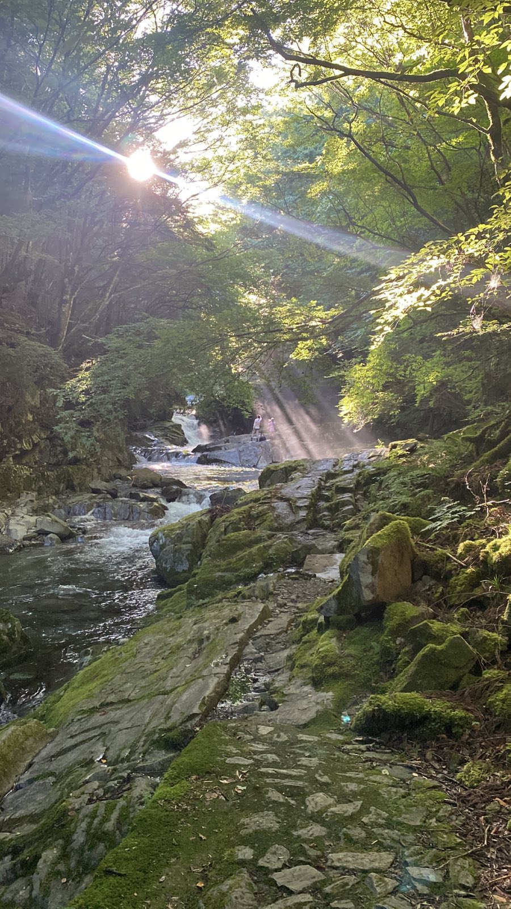
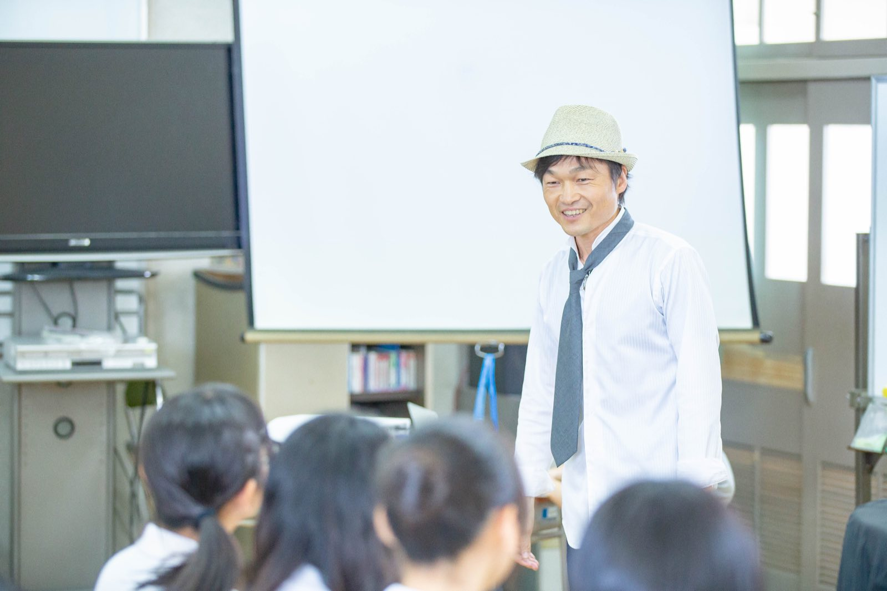

人の本音を聴く
表面的な要望ではなく、相手が本当は何を実現したいのか、どんな違和感や願いを持っているのかを見立てます。
FIELD COACHING / TENKAWA
天川村を拠点に、コーチング・対話・自然体験・修験道の文脈を組み合わせて、人・企画・地域の可能性が立ち上がる場を設計します。

前田薫がしているのは、イベントづくりでも、観光案内でも、地方創生の掛け声でもありません。人や団体の中にあるまだ言葉になっていない願いを聴き、天川村という場の力とつなぎ、体験として形にする仕事です。
表面的な要望ではなく、相手が本当は何を実現したいのか、どんな違和感や願いを持っているのかを見立てます。
天川村、洞川、川、山、座禅、修験道、地域の人の力を、単なる資源ではなく、場の個性として扱います。
参加者が「よかった」で終わらず、自分の言葉や次の一歩を持ち帰れるように、流れ・問い・余白を設計します。
座禅会、サマーキャンプ、宝塚JC、女性向けリトリート、自然農コミュニティ、天川再生体験事業。それぞれ形は違っても、中心にある流れは同じです。

社会で働き、場に還り、また社会へ戻る。その循環を、天川村からつくる。
寺子屋は、何かを教える場所ではなく、共鳴が起きる場所です。前田薫の仕事は、その共鳴が起きやすい場を、企画・導線・人の関係として設計することです。
まずは、あなたの中にある違和感や願いを聴くところから始めます。
自分の本来の言葉に戻る。天川村でのリトリート・伴走コーチング。
相談する →経営者・幹部・チームの対話文化を整える法人向けプログラム。補助金活用も含めて設計できます。
法人向けページへ →子ども・若者・関係人口・地域循環をつなぐ体験企画。天川村と行政・学校・地域事業者との協働設計。
相談する →まだ言葉になっていない願いを、企画書・案内ページ・導線に変える伴走。AI秘書を使って高速実装。
相談する →経営者・幹部・組織チームの方へ
補助金活用・天川村リトリート・AI導入まで含めた法人向け専用プログラムがあります。
「天川村で何かしたい」「自分たちの企画を深めたい」「参加者に本物の体験を届けたい」。その段階から相談できます。
コーチング、教育、地域、親子事業、コミュニティづくり。形は違っても、場の力と人の本来性をつなぐ実践が進んでいます。
自分の価値観・ミッション・才能に正直に生きたい人たちが集まるグループコーチングプログラム。対話セッションと個別伴走を重ねながら、他者の期待軸で動いてきた自分に気づき、本来の言葉で人生・事業・発信を動かしていく場を設計している。
坐禅・水・読経・対話を通して、日常の役割から離れ、自分の呼吸と感覚に戻る場。天川村との深い接点として、経営者や参加者が継続的に訪れる導線になっている。
「自然農を暮らしに取り入れたい」という想いを起点に、天川村での自然農体験イベントを企画・設計・実施。参加者が体験から持ち帰った気づきや実践をコミュニティページに蓄積し、一度きりで終わらない継続循環の仕組みとして育てている。
息子が天川村で運営するサッカー教室に、メンタル面・問いかけ・場づくりのコーチとして関わっている。技術を教えるだけの場にせず、ジャッジしない、その子の才能を引き出す寺子屋的な育成の場として親子で育てている。
息子が動かすサッカー事業を、note発信・AI活用・収益循環の仕組みとして一緒に設計。親子で本音、事業、AI秘書、現場の実践を重ねることで、家族関係の中にもコーチングを実装している。
都市部の子どもたちと天川村の子どもたちが出会い、自然体験・対話・地域交流を通して学び合うプログラムを設計。単発イベントではなく、都市と地域が継続的につながる関係人口の入口として育てている。
海外経験を事業に変えようとしている経営者と、天川村の体験・禅・修験道を若者の成長プログラムへ接続。世界へ出る挑戦と、日本の精神文化に還る体験を往復する事業導線を共同で設計している。
サッカーに打ち込む高校生が、サマーキャンプで子どもを支える側に立つプログラム。伴走・問いかけ・判断・安全を見る力を現場で学び、競技だけでは育ちにくいリーダーシップを身体で掴んでいく。
「何かしなきゃ」「ちゃんとしなきゃ」で動き続けてきた女性が、天川村の自然と対話の中で自分の言葉を取り戻すリトリートを共同設計。体験型コーチングと場の設計を重ね、本来の自分で次の一歩を選べる時間をつくっている。
サマーキャンプ・高校生育成・ワーホリ・寺子屋を別々の事業としてではなく、子どもから大人へ、地域から世界へと広がる一つの成長循環として設計。天川村を起点に、日本の精神文化と世界への挑戦がつながる教育モデルを育てている。
座禅・水・洞窟・修験道・文化再生を束ね、外国人や経営者にも届く深い体験事業として設計。観光ではなく、感覚・呼吸・問いを取り戻す再生の体験として、天川村でしかできない価値を形にしている。
最初から完成した企画がなくても大丈夫です。むしろ、言葉になっていない段階から一緒に扱うのが得意です。
やりたいこと、違和感、対象者、背景、まだ言葉になっていない願いを丁寧に聞きます。
その企画で本当に起こしたい変化、届けたい価値、天川村と重なる理由を言語化します。
企画書、プログラム、案内ページ、会議アジェンダ、参加者導線までAI秘書と一緒に高速で作ります。
AI秘書は、文字起こしを読み、企画書を作り、HTMLページを組み、情報を整理する。けれど、何を大切にするかを見立てるのは、人間の感受性です。
前田薫の強みは、コーチングで聴き取った本質を、AIの力で短時間に見える形へ変えること。これにより、相手は自分の企画の可能性をすぐに体感できます。


人生デザインコーチ® / 天中道コーチ
奈良県天川村 在住・地域おこし協力隊
「自分らしく生きられない人をゼロにする」をミッションに、天川村を拠点にコーチング・体験企画・地域づくりに関わっている。
コーチングの源流には、人生デザイン構築学校と師匠である高衣紗彩（たかごろもさあや）先生から学び続けている中庸思考・人生デザインの思想がある。現在も人生デザイン構築学校に関わりながら、その学びを天川村での実践、かおる塾、個人コーチング、場づくりに落とし込んでいる。
価値観・才能・本音を瞬時に捉える対話力と、体験から場をつくる設計力を持つ。AI秘書を使った高速実装を組み合わせ、相談から形になるまでを一体で伴走する。
かおる塾（グループコーチング）、天川サマーキャンプ、座禅会、自然農コミュニティなど複数の場を主宰・設計・運営中。
仕事の説明だけでは伝わりきらない、天川村での日常があります。猫と歩くこと、川に入ること、問いを文章に残すこと。その全部が、場をつくる感覚の土台になっています。
フォロワー13,000人を超える猫のひみのInstagram。猫との散歩を通して、天川村の川、雪、朝の光、祈りの気配を届けています。
コーチング、天川村、家族、AI、寺子屋。日々の出来事を通して、何を見て、何を問い続けているのかを文章にしています。
幼少期から泥川に惹かれ、天川村に来たというより呼ばれた感覚がある。地域に合わせるのではなく、自分の反応に気づきながら、この土地と関わり続けています。
かおるちゃんが今ひらいている場、これから関われる入口を縦に並べました。気になるところから、無理なく関わってください。
まだ企画になっていなくても大丈夫です。まずは、何を実現したいのか、誰に届けたいのか、天川村とどう重なるのかを一緒に言葉にしましょう。
まずは30分相談する